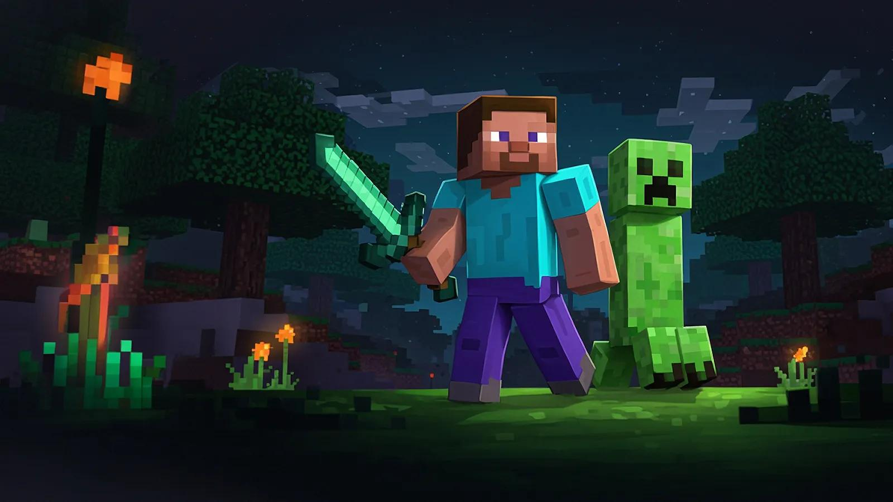
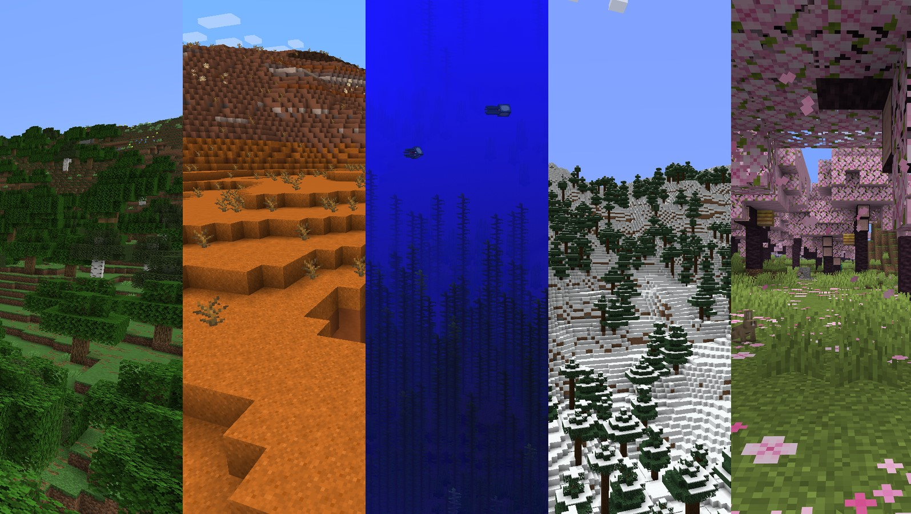
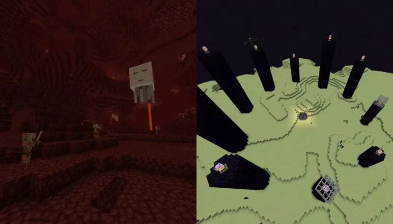

O Creeper é uma das criaturas mais conhecidas do Minecraft e surgiu de um erro durante o desenvolvimento do jogo. Ao tentar criar o modelo de um porco, o desenvolvedor acabou criando um personagem com proporções diferentes. A ideia foi aproveitada e o Creeper acabou se tornando uma das criaturas mais famosas do jogo.

O Minecraft possui diversos biomas, que são regiões com características diferentes dentro do mundo. Eles podem apresentar mudanças no clima, vegetação, animais, terreno e paisagem. Entre eles estão florestas, desertos, oceanos, montanhas e regiões cobertas de neve.

Além do Mundo Superior, o Minecraft possui outras duas dimensões principais: o Nether e o End. O Nether é uma região perigosa, com grandes quantidades de lava e criaturas próprias. Já o End é uma dimensão diferente, conhecida por ser o local onde o jogador pode enfrentar o Dragão Ender.